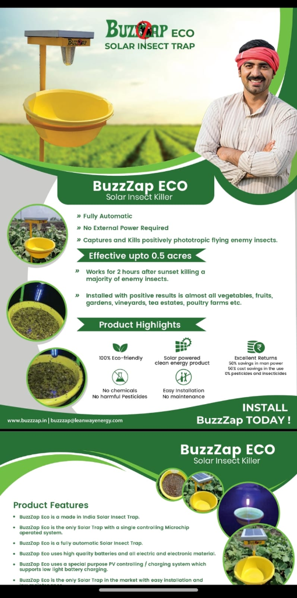
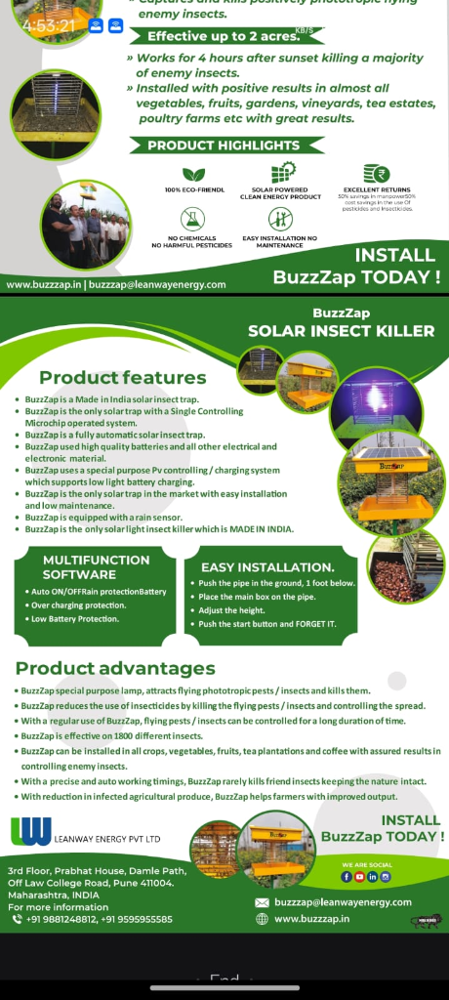

Pioneering restructuring and clean-energy pest control technologies engineered to deliver measurable operational performance across diverse fields and industries.
Vineyards, Crops, Tea Gardens & Organic Farms
Domestic, Commercial, Industrial, Irrigation & Poultry
Grape farming and exotic fruit orchards are especially prone to night-flying beetles, leafhoppers, and berry moths that puncture skins and invite fungal blight. Chemical sprays leave toxic residues on grape skins, restricting export compliance. BuzzZap provides continuous solar-powered defense directly in the vineyard rows, preserving export grades and eliminating expensive manual spraying.
 Mounted in Vineyard Trellises
Mounted in Vineyard Trellises
 Solar Clean Energy in Field
Solar Clean Energy in Field
 Mass Trapping of Destructive Beetles
Mass Trapping of Destructive Beetles
 Specialized Phototropic Night Lamp
Specialized Phototropic Night Lamp
Tomato, chilli, cotton, okra, eggplant (brinjal), and pulse crops face persistent cycles of shoot and fruit borers, whiteflies, and bollworms. Female moths lay hundreds of eggs during the evening flight window. BuzzZap eliminates the parent generation automatically each evening, halting reproduction before destructive caterpillar larvae can hatch.

BuzzZap ECO Yellow Basin Trap
BuzzZap High-Voltage Solar Killer Double the Farmer's Net Margin
Double the Farmer's Net Margin
 Integrated Pest Management (IPM)
Integrated Pest Management (IPM)
World-renowned tea gardens (including our clients Chamong Tea Estates and Sycotta Tea Co.) produce delicate export teas where strict pesticide residue limits apply. BuzzZap solar traps protect massive hilly acreage from looper caterpillars, green flies, and berry borers without chemical tainting.
 Trusted by Chamong & Sycotta Tea
Trusted by Chamong & Sycotta Tea
 Bulk Commercial Estate Shipments
Bulk Commercial Estate Shipments
Limescale is a constant menace in domestic households. Hard water destroys expensive home appliances, clogs geysers and showerheads, leaves ugly white stains on premium bathroom fixtures, and harms skin and hair health.
 Choking of Shower and Tap Fixtures
Choking of Shower and Tap Fixtures
 Hard Water Stains on Tap and Glass
Hard Water Stains on Tap and Glass
 Scale on Geysers and Heat Pumps
Scale on Geysers and Heat Pumps
 Limescale in Washing Machines
Limescale in Washing Machines
In hotels, commercial complexes, and retail centers, guest experience is directly linked to water quality. Hard water ruins plumbing fixtures, leaves ugly white stains, damages expensive appliances, and increases detergent and maintenance expenditures.
 Choking of Commercial Pipelines
Choking of Commercial Pipelines
 Reduced Chiller & HVAC Efficiency
Reduced Chiller & HVAC Efficiency
 Stains on Tiles, Floors & Glass
Stains on Tiles, Floors & Glass
 Luxury Guest Experience Without Salt
Luxury Guest Experience Without Salt
Industrial water networks, cooling towers, and boiler systems are highly vulnerable to mineral crystallization. Scaling acts as an aggressive thermal barrier, leading to massive heat transfer losses, soaring energy consumption, and high operational costs.
 Clogged Industrial Pipeline Networks
Clogged Industrial Pipeline Networks
 Boiler Scale & Efficiency Loss
Boiler Scale & Efficiency Loss
 Cooling Tower Biofouling & Scaling
Cooling Tower Biofouling & Scaling
 Heat Exchanger Tube Protection
Heat Exchanger Tube Protection
In modern agriculture, water is the lifeblood of crop yields and soil viability. However, hard water containing high concentrations of calcium and magnesium minerals poses a critical threat to modern farming. Over time, these minerals crystallize, creating persistent challenges that degrade equipment, lock out nutrients, and reduce farm profitability.
 Clogged Drip Irrigation Emitters
Clogged Drip Irrigation Emitters
 Low Water Absorption & Hard Soil Crust
Low Water Absorption & Hard Soil Crust
 Nutrient Deficient Stunted Plants
Nutrient Deficient Stunted Plants
 Scale Buildup on Pump Impellers
Scale Buildup on Pump Impellers
In animal husbandry and poultry operations, animal health is heavily dependent on clean, continuous hydration. Hard water causes blockage in delicate drinking systems and acts as a breeding ground for dangerous bacterial pathogens, leading to flock and herd health issues.
 Choking of Water Feed Pipes
Choking of Water Feed Pipes
 Algae & Biofilm inside Feedlines
Algae & Biofilm inside Feedlines
 E-Coli Related Health Concerns
E-Coli Related Health Concerns
 High Mortality and Low Farm Yields
High Mortality and Low Farm Yields